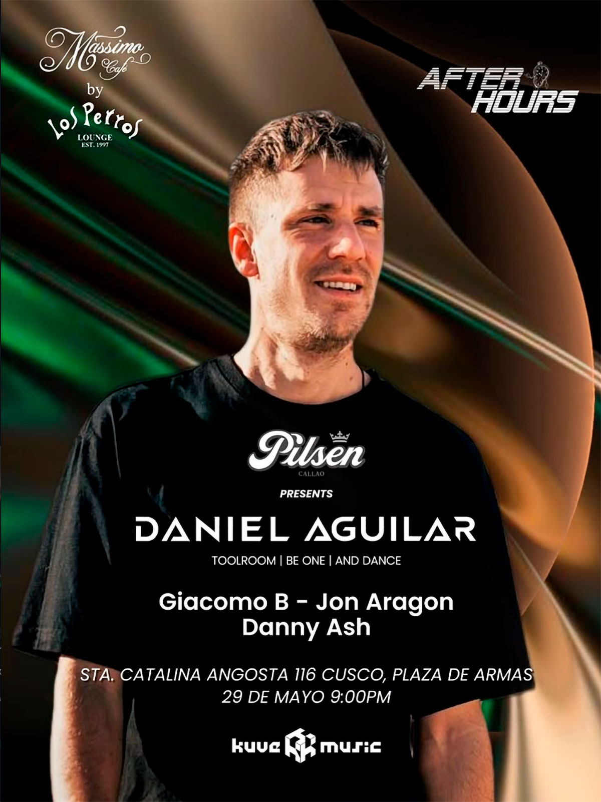

AFTER HOURS
fecha: 29/05/26 hora: 9pm
lugar: Mássimo Café,
Santa Catalina Angosta 116 (Plaza de Armas), Cusco

entradas: PASSLINE

AFTER HOURS presenta
@danielaguilarmusic 🇪🇸
Viernes 29 de Mayo
Desde Barcelona hacia la escena global, ha hecho vibrar salas y festivales por todo el globo.
A lo largo de su carrera ha compartido cabina con leyendas como Richie Hawtin , Paco Osuna , Wade , De la Swing , Late replies entre otros..
Continuando con su gira internacional y ahora en el ombligo del Mundo #Cusco.
Con un estilo que combina groove, ritmo y vanguardia. Su estilo fusiona lo mejor del Tech house , minimal y techno actual creando un viaje musical vibrante y envolvente.
Support
@jonaragoncuscodj
@giaco4ce
@dannyashdj
Powered by
@pilsen_callao
@passline.pe
@losperros.cusco
📍 @massimo_cafe
Santa Catalina Angosta # 116
PLAZA DE ARMAS CUSCO
LINE-UP:
Daniel Aguilar
Giacomo B.
Jon Aragon
Danny Ash